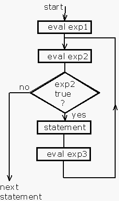

It might be thought that a programme that reads in two user entered integers and prints out their sum would be a simple piece of code with little of real interest. This assumption is wrong, once the programmer wishes to ensure that errors are detected and also wants to handle the user input channel in a reasonably general fashion. Java provides all these facilities. Unfortunately for those who like simple "proof-of-concept" programmes, the Java programmer has to do it properly - or not at all.
Here's a Java programme that prompts the user to enter integer values and prints out the sum of the integer values.
import java.io.*;
public class Addup
{
static public void main(String args[])
{
InputStreamReader stdin =
new InputStreamReader(System.in);
BufferedReader console =
new BufferedReader(stdin);
int i1 = 0,i2 = 0;
String s1,s2;
try
{
System.out.print("Enter first number ");
s1 = console.readLine();
i1 = Integer.parseInt(s1);
System.out.print("Enter second number ");
s2 = console.readLine();
i2 = Integer.parseInt(s2);
}
catch(IOException ioex)
{
System.out.println("Input error");
System.exit(1);
}
catch(NumberFormatException nfex)
{
System.out.println("\"" +
nfex.getMessage() +
"\" is not numeric");
System.exit(1);
}
System.out.println(i1 + " + " +
i2 + " = " + (i1+i2));
System.exit(0);
}
}
Here's a sample dialogue. [ bash-2.03$ is the Unix system prompt.]
bash-2.03$ java Addup Enter first number 23 Enter second number 78 23 + 78 = 101
It is instructive to compare this Java programme with a C programme that also reads in two integers and prints the sum.
#include <stdio.h>
main()
{
int i1,i2;
printf("Enter first number ");
scanf("%d",&i1);
printf("Enter second number ");
scanf("%d",&i2);
printf("%d + %d = %d\n",i1,i2,i1+i2);
}
The programmer may be excused for agreeing with the adage that "Java makes impossible things possible but makes easy things difficult". However this is not really a fair comment, the C programme incorporates no error detection at all and can easily get into a very obscure mess.
The programme uses various classes (such as BufferedReader and InputStreamReader) that are defined in the java.io package. It is, thus, necessary to import this package.
import java.io.*;
To make the whole programme work it is necessary to read the character stream from the standard input channel, save it as a sequence of characters and then use a function (method) that converts the numeric value from the external character format to the internal binary format.
C programmers and Unix users talk about the standard input channel, often abbreviated to stdin. This is commonly associated with the console device keyboard although operating systems such as Unix allow the user to "hook" standard input to almost data source such as a file, a data communication channel or the output of another programme without any need to modify the programme in any way. This is a very powerful and useful facility.
In order to convert from external numeric format to internal format, Java uses the parseInt() method of the Integer class. The method requires a standard Java string as parameter. The Integer class is sometimes called a wrapper class, it contains various methods etc., associated with the use and manipulation of the primitive data type int. In this case the programmer has not created any objects of class Integer, however you can always refer to a function that is a member of a class by quoting the class name (rather than the name of an object of the class type).
However before the conversion can be performed, the input character sequence has to be obtained and stored as a string. A console keyboard user will normally terminate his input by striking the RETURN key thus marking out a line of text on console screen. The terminated line of input can be obtained, as a string, using the readLine() input method, this will, internally detect and remove the terminating RETURN and construct a properly formed string. The sequence of events is.
String s; s = console.readLine(); i = Integer.parseInt(s);
The readLine() method belongs to the class BufferedReader. A BufferedReader object must be associated with an InputStreamReader which in turn must be associated with an InputStream object.
This is all handled by the code
InputStreamReader stdin = new InputStreamReader(System.in); BufferedReader console = new BufferedReader(stdin);
stdin and console are just local variable names. The definition of the System class includes the line
public static final java.io.InputStream in;
which establishes the nature of System.in.
One of the important characteristics of any programme designed to be used by humans is that they are likely to make mistakes entering data into the programme. The professional programmer must attempt to detect or catch user input errors. The Java try/catch mechanism is a very good way of doing this. Unlike some forms of error handling it does not make code difficult to read by intermixing error handling code with the main functional code. The main functional code is enclosed in a try clause, the statements may throw errors which cause the execution of catch clauses. Specific types of errors can be handled by specific catch clauses in an manner similar to that shown in the programme listed above.
The actual types of exception are described in the class definitions. In this simple programme, there are two likely exceptions, these are IOException and NumberFormatException. The types of condition that cause these exceptions are obvious from the names. An exception is actually an object that may have properties and methods, some of these might provide further information about the exception. The commonest exception method is getMessage() that returns a string that might be informative, in the case of the NumberFormatException this is simply the string that caused the problem.
Here are some specimen dialogues showing input errors and the resulting exceptions.
The first example shows the effect of a non-numeric input
bash-2.03$ java Addup Enter first number 23 Enter second number two "two" is not numeric
The second example is rather more surprising
bash-2.03$ java Addup Enter first number -44 Enter second number +66 "+66" is not numeric
This is less than ideal behaviour by the parseInt() method.
The exit() method of the System class returns from the Java programme to the host operating system. The parameter is available to the host operating system as a return code. A common convention is to use the value 0 to indicate that the programme has worked properly and any non-zero value to indicate that some sort of error has occurred. If you are using a normal Unix shell the shell command echo $? will display the return code.
It is not necessary to make separate declarations of all the objects and variables, in many cases the value returned by one function/method can used as a parameter of another function simply by nesting the calls. Using this facility the code for the current example could be rewritten as shown below.
import java.io.*;
public class Addup
{
static public void main(String args[])
{
BufferedReader console =
new BufferedReader(
new InputStreamReader(System.in)
);
int i1 = 0,i2 = 0;
try
{
System.out.print("Enter first number ");
i1=Integer.parseInt(console.readLine());
System.out.print("Enter second number ");
i2=Integer.parseInt(console.readLine());
}
catch(IOException ioex)
{
System.out.println("Input error");
System.exit(1);
}
catch(NumberFormatException nfex)
{
System.out.println("\"" + nfex.getMessage() + "\" is not numeric");
System.exit(1);
}
System.out.println(i1 + " + " +
i2 + " = " + (i1+i2));
System.exit(0);
}
}
It is worthwhile to compare this with the earlier code listing.
Users who are familiar with the use of a command line interface and also with scripting find programmes that interactively prompt the user for values to be rather tedious. It would be nice if you could type something like.
Addup 22 44And if you could do that, it'd be quite nice to be able to do things such as
Addup 34 567 21 11
It is possible to provide input to Java programmes this way. The strings that appear on the command line are available within the programme via the args[] parameter of the function main() which must appear in every executable programme. [This name is yet another carry over from the C programming language.] It is the responsibility of the host operating system to grab the characters from the command line and make them available to the programme.
args is an array of strings. Each member has to be separately converted to a internal integer. Here's the code.
import java.io.*;
public class Cmadd
{
static public void main(String args[])
{
int total = 0;
int j;
try
{
for(j=0;j<args.length;j++)
total +=
Integer.parseInt(args[j]);
}
catch(NumberFormatException nfex)
{
System.out.println("\"" +
nfex.getMessage() +
"\" is not numeric");
System.exit(1);
}
System.out.println("sum = " + total);
System.exit(0);
}
}
And here's a typical dialogue
bash-2.03$ java Cmadd 12 34 56 78 sum = 180
The basic programme design is to "loop through" or "walk" the array of strings, converting each one to an internal integer and accumulating the result. To do this using any standard looping mechanism you need to know haw many strings there are to process. This is equivalent to knowing the size (or number of elements) of the array args. Java arrays have a standard property that gives this value, it is called length. A professional programmer would first check that the size of the array was non-zero.
Notice that in this example the programmer has not specifically created the array args, this is done by the Java interpreter, this is a special case associated with the function main().
|
Java's for statement is syntactically and semantically almost identical to C's. In case you are unfamiliar with this, the syntax and the flow of control is illustrated by the diagram on the right. for(exp1;exp2;exp3) statement With the meaning that
|  |
The programme uses the assignment operator (+=) to accumulate the total value. Assignment operators should be familiar to C programmers, for those unfamiliar with C, this is just a shorthand way of writing.
total = total + Integer.parseInt(args[j]);
If a programme that sums numbers read from the command line is useful, one that would sum numbers read from a file would be equally desirable. Of course, you could, with some Unix trickery move the contents of a file to a command line but this isn't always convenient and is of doubtful portability, anyway it's a good excuse to show some basic Java file handling.
Here's a programme that takes a file name from the command line and sums the numbers read from the file. An assumption is made that the file format is one number per line.
Here's the code
import java.io.*;
public class Filadd
{
static public void main(String args[])
{
int total = 0;
try
{
FileReader file =
new FileReader(args[0]);
BufferedReader in =
new BufferedReader(file);
String line;
while((line = in.readLine()) != null)
{
total += Integer.parseInt(line);
}
in.close();
}
catch(NumberFormatException nfex)
{
System.out.println("\"" +
nfex.getMessage() +
"\" is not numeric");
System.exit(1);
}
catch(IOException io)
{
System.out.println("IO error");
System.exit(1);
}
System.out.println("sum = " + total);
System.exit(0);
}
}
Much of this should be familiar from the previous examples. There are two lines of code concerned with creating the data structures and opening the file. These are.
FileReader file = new FileReader(args[0]); BufferedReader in = new BufferedReader(file);
The object file is an instance of the FileReader class. This is designed specfically for reading text files. The object in is an instance of the BufferedReader class, this is needed to handle the parsing of the local file line structure into strings.
On most operating systems a text file consists of lines. A line is a sequence of characters terminated by an end-of-line indication. The BufferedReader class's readLine() method will recognise the end-of-line indication and convert the input line into a string.
In designing a programme of this nature, it is important to consider how it stops. Clearly it should stop when there is no more data available, the readLine() method returns the special value null when it has attempted to read beyond the end of file. This actually means that it has not returned a string since it has not found a line to read.
The recognition of the special return value associated with end of file is a much superior technique to the so-called "sentinel" or "silly number" method of indicating end of data. Of course, if you are reading from a file, it is obvious that the operating system will know how big the file is and generate suitable indications, it is not so obvious what happens if you are reading from the keyboard or a communications channel. In the case of the keyboard, on many operating systems there is a special key (or key combination) that is detected by the operating system, this is typically Ctrl-D on Unix systems. For a communications channel, failure or remote closure is detected by the operating system and reported to applications in the same way as end of file.
This programme uses a while loop rather than a for loop. This is basically because the programme cannot determine in advance how many values are going to be read in so it simply repeats the operation while some condition is true.
In this example the continuation condition is
(line = in.readLine()) != null
This is, of course, a boolean expression but the left hand operand of the != operator repays more careful examination. In case you're confused by the parentheses etc., this left hand operand is
(line = in.readLine())
This is an assignment expression. If you are unfamiliar with C, this might be a bit surprising. A piece of syntax of the form a = b is an expression and has a value in just the same way as a + b has a value. The value of the assignment expression is the value of the left hand operand. Strictly you could say that the evaluation of an assignment expression, as a side-effect, results in the storage of a value. Of course you could write this piece of code without taking advantage of the assignment operator. It would look something like.
boolean eof = false;
do
{
line = in.readLine();
if(line == null) eof = true;
else total += Integer.parseInt(line);
} while(!eof);
This is noticeably more clumsy and the use of assignment expressions in the manner shown in the example is to be encouraged.
You may have noticed the apparent extra set of parentheses around the assignment expression. These are necessary since the assignment operator (=) has a lower precedence then the conditional operator !=. If they were omitted the code would first compare in.readLine() with null and then attempt to assign the result of the comparison to line. [Actually the code wouldn't compile, can you see why?]
The of try/catch should, by now, be familiar and you won't be surprised to know that, if the file doesn't exist, an IOException is thrown.
To demonstrate the programme a data file called "data" and containing the values 23, 44, 11 and 22 was created. Here's a listing of the file followed by a run of the programme.
bash-2.03$ cat data 23 44 11 22 bash-2.03$ java Filadd data sum = 100
A more detailed study of the FileReader class reveals that it can throw a FileNotFoundException and this can be caught by the following clause.
catch(FileNotFoundException fnf)
{
System.out.println("Couldn't open " +
fnf.getMessage());
System.exit(1);
}
And here's some examples, first an attempt to read from a non-existent file.
bash-2.03$ java Filadd pqr Couldn't open pqr (No such file or directory)
and now an example in which the file does exist but is not accessible due to incorrect access rights.
bash-2.03$ java Filadd xyz Couldn't open xyz (Permission denied)
Finally here is a version of the programme that will work past errors in the input file. Errors are, of course, reported but rather than give up at that stage, the programme carries on summing any valid data value. Two significant changes have been made to the programme. The first is the try/catch associated with numeric format errors is now within the processing loop since any caught error associated with a try/catch results in program flow going to the statement after the try/catch. The second change is slightly more subtle, the error messages are now written using System.err.println() rather than System.out.println() . This enables the host operating system to capture the errors in a different place to the result of the summing operations.
Here's the code.
import java.io.*;
public class Filadd
{
static public void main(String args[])
{
int total = 0;
try
{
FileReader file = new FileReader(args[0]);
BufferedReader in = new BufferedReader(file);
String line;
while((line = in.readLine()) != null)
{
try
{
total += Integer.parseInt(line);
}
catch(NumberFormatException nfex)
{
System.err.println("\"" + nfex.getMessage() + "\" is not numeric");
}
}
in.close();
}
catch(FileNotFoundException fnf)
{
System.err.println("Couldnt open " + fnf.getMessage());
System.exit(1);
}
catch(IOException io)
{
System.err.println("IO error");
System.exit(1);
}
System.out.println("sum = " + total);
System.exit(0);
}
}
To demonstrate the modified programme the data file was modified by including a line that contained the text "three". Here's a listing of the modified data file followed by a run of the programme.
bash-2.03$ cat data 23 44 three 11 22 bash-2.03$ java Filadd data "three " is not numeric sum = 100
The final example runs the programme again for the same set of data only the output is captured in a file which is subsequently displayed.
bash-2.03$ java Filadd data >results 2>errs bash-2.03$ cat results sum = 100 bash-2.03$ cat errs "three " is not numeric
The command line items >results 2>errs are picked up by the host operating system (Unix). >file-name redirects the standard output channel to the named file, 2>file-name redirects the error output channel to the named file. In Java out is an output stream associated with the standard output and err is an output stream associated with the error output.
On Unix systems, any programme is launched with three "pre-opened" i/o channels that are normally associated with the console. These are
| 0 | standard output channel | to console display (screen) |
| 1 | standard input channel | to console keyboard |
| 2 | error output channel | to console display (screen) |
As can be seen from the example above these can be "re-hooked" to files (or indeed communication channels, standard channels of other programmes or more or less anything.)
This page is part of a set of notes about the Java programming language prepared by Peter Burden